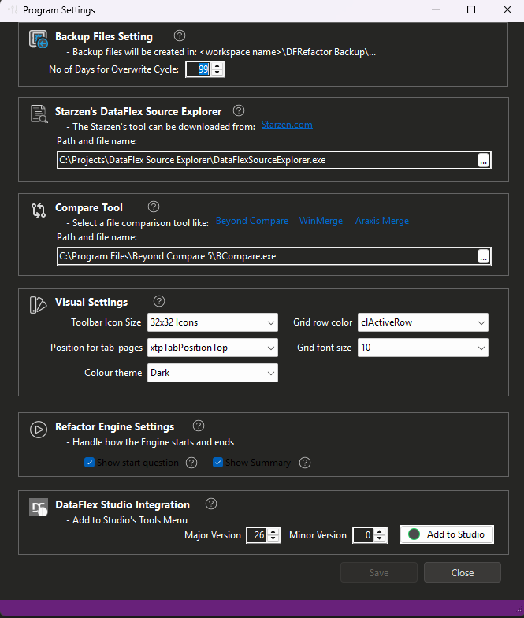

Program Settings
Program Settings (Tools > Settings..., or Ctrl+T) contains the settings for backups, two external tools, the appearance of the program, the refactoring engine, and the DataFlex Studio integration. Save saves the settings; Close closes the dialog without saving.

Point to the round information symbol beside a group to read what it does.
Backup Files Setting
Backup files are written to <workspace home>\DFRefactor Backup\..., with the same folder structure as the source folders. The dialog shows the path that is used.
No of Days for Overwrite Cycle is the only setting in this group, and it is important. Within the cycle, DFRefactor does not overwrite a backup that already exists. The original file is therefore kept through a whole series of refactoring runs, not only the latest one. If you make five refactoring runs during a week, the backup still contains the original file, so Revert restores the code as it was before you started.
When the cycle has passed, the next run that changes a file makes a new backup of it, and the original file in the backup is replaced by code that has already been refactored. The default is 99 days, which is longer than most migration projects. Set it to match how long your projects take.
You are responsible for backing up your source before running DFRefactor. The built-in backup is a convenience, not a guarantee. Check your source into version control, or take an independent copy, before starting a refactoring session.
Starzen's DataFlex Source Explorer
A tool from another vendor, which is downloaded and installed separately; the group has a link to its website. Enter the path to its program file, and you can start it from the Tools menu, from the toolbar, or with Ctrl+E.
Compare Tool
A file comparison program from another vendor, which is also installed separately. The group has links to three suggestions: Beyond Compare, WinMerge and Araxis Merge. Enter the path to the one you use.
Every command in DFRefactor that shows differences uses this program:
- Compare Source on the dashboard — the whole folder tree against its backups.
- Compare in the editor — the open file against its own backup.
- The Undo Refactoring dialog — a selected backup against the file that replaced it.
If no compare program is set, these commands cannot be used.
Visual Settings
- Colour theme — Dark, Light, or Follow Windows. This setting takes effect after the program is restarted, because the web-based parts of the user interface read the theme when they are created.
- Toolbar Icon Size — the size of the main toolbar's icons.
- Position for tab-pages — on which side of the window the view tabs are shown.
- Grid row color — the background of the current row in grids.
- Grid font size — grids only; it does not affect drop-down selection lists.
Refactor Engine Settings
Two settings that apply before and after a run. It is recommended to keep both turned on:
- Show start question — asks Yes or No before the engine starts, with a summary of what will run and a reminder to check your source code into version control first. When it is off, the run starts immediately.
- Show Summary — opens the summary automatically when the run has finished. When it is off, no summary is shown, but you can still open it with Read log on the dashboard.
DataFlex Studio Integration
Adds DFRefactor to the DataFlex Studio Tools menu, so you can start it without leaving the Studio. Set Major Version and Minor Version to the Studio you want it added to, then press Add to Studio.
This does not have to be the Studio that DFRefactor was compiled with. The version fields let you add one installation of DFRefactor to any Studio that you use.